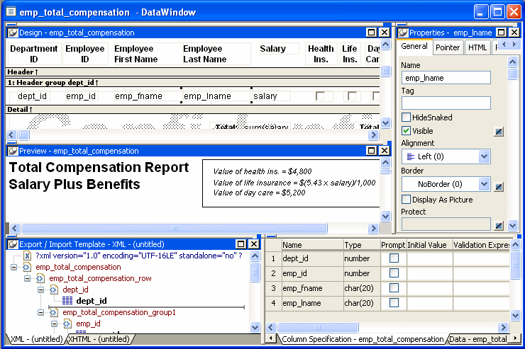
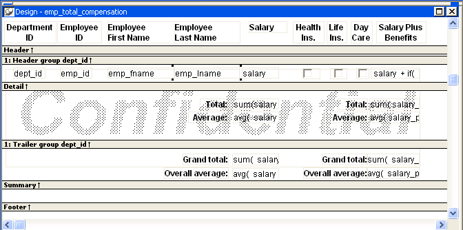

The DataWindow painter provides views related to the DataWindow object you are working on. Interacting with these views is how you work in the DataWindow painter.
The following picture shows a DataWindow object in the DataWindow painter with the default layout.

The Design view at the top left shows a representation of the DataWindow object and its controls. You use this view to design the layout and appearance of the DataWindow object. Changes you make are immediately shown in the Preview view and the Properties view.
The Preview view in the middle on the left shows the DataWindow object with data as it will appear at runtime. If the Print Preview toggle is selected, you see the DataWindow object as it would appear when printed.
The Export/Import Template view for XML at the bottom left shows a default template for exporting and importing data in XML format. You can define custom templates for import and export. The templates are saved with the DataWindow object. For more information, see Chapter 29, "Exporting and Importing XML Data."
The Export Template view for XHTML (not shown; see XHTML tab at the bottom left) shows a default template for exporting data in XHTML format. You can define custom XHTML export templates for customizing XML Web DataWindow generation. The templates are saved with the DataWindow object. For more information, see the DataWindow Programmer's Guide .
The Properties view at the top right displays the properties for the currently selected control(s) in the DataWindow object, for the currently selected band in the DataWindow object, or for the DataWindow object itself. You can view and change the values of properties in this view.
The Control List view in the stacked pane at the bottom right lists all controls in the DataWindow object. Selecting controls in this view selects them in the Design view and the Properties view. You can also sort controls by Control Name, Type, or Tag.
The Data view in the stacked pane at the bottom right displays the data that can be used to populate a DataWindow object and allows manipulation of that data.
The Column Specifications view in the stacked pane at the bottom right shows a list of the columns in the data source. For the columns, you can add, modify, and delete initial values, validation expressions, and validation messages. You can also specify that you want a column to be included in a prompt for retrieval criteria during data retrieval. To add a column to the DataWindow object, you can drag and drop the column from the Column Specifications view to the Design view. For external or stored procedure data sources, you can add, delete, and edit columns (column name, type, and length).
For most presentation styles, the DataWindow painter Design view is divided into areas called bands. Each band corresponds to a section of the displayed DataWindow object.
DataWindow objects with these presentation styles are divided into four bands: header, detail, summary, and footer. Each band is identified by a bar containing the name of the band above the bar and an Arrow pointing to the band.
These bands can contain any information you want, including text, drawing controls, graphs, and computed fields containing aggregate totals.
The following picture shows the Design view for a tabular DataWindow object.

The header band contains heading information that is displayed at the top of every screen or page. The presentation style determines the contents of the header band:
You can specify additional heading information (such as a date) in the header band and you can include pictures, graphic controls, and color to enhance the appearance of the band.
 Displaying the current date To include the current date in the header, you place a computed
field that uses the Today DataWindow expression function in the header
band. For information, see "Adding computed fields to
a DataWindow object"
Displaying the current date To include the current date in the header, you place a computed
field that uses the Today DataWindow expression function in the header
band. For information, see "Adding computed fields to
a DataWindow object"
The detail band displays the retrieved data. It is also where the user enters new data and updates existing data. The number of rows of data that display in the DataWindow object at one time is determined by the following expression:
(Height of the DataWindow object – Height of headers and footers) /
Height of the detail band
The presentation style determines the contents of the detail band:
 How PowerBuilder names the columns in the Design view If the DataWindow object uses one table, the names of the columns
in the Design view are the same as the names in the table.
How PowerBuilder names the columns in the Design view If the DataWindow object uses one table, the names of the columns
in the Design view are the same as the names in the table.
When you design the detail band of a DataWindow object, you can specify display and validation information for each column of the DataWindow object and add other controls, such as text, pictures, graphs, and drawing controls.
You use the summary and footer bands of the DataWindow object the same way you use summary pages and page footers in a printed report:
The DataWindow painter contains three customizable PainterBars and a StyleBar.
For more information about using toolbars, see "Using toolbars".
The PainterBars include buttons for standard operations (such as Save, Print, and Undo on PainterBar1), for common formatting operations (such as Currency, Percent, and Tab Order on PainterBar2), and for database operations (such as Retrieve and Insert Row on PainterBar3).
They also include six drop-down toolbars, which are indicated by a small black triangle on the right part of a button. Table 19-2 lists the drop-down toolbars that are available. The Controls toolbar is on PainterBar1. The other drop-down toolbars are on PainterBar2.
The StyleBar includes buttons for applying properties (such as bold) to selected text elements.
Each part of the DataWindow object (such as text, columns, computed fields, bands, graphs, even the DataWindow object itself) has a set of properties appropriate to the part. The properties display in the Properties view.
You can use the Properties view to modify the parts of the DataWindow object.
 To use the Properties view to modify the parts
of the DataWindow object:
To use the Properties view to modify the parts
of the DataWindow object:
Position the mouse over the part you want to modify.
Display the part's pop-up menu and select Properties.
If it is not already displayed, the Properties view displays. The view displays the properties of the currently selected control(s), the band, or the DataWindow object itself. The contents of the Properties view change as different controls are selected (made current).
For example, the Properties view for a column has seven tabbed property pages of information that you access by clicking the appropriate tab. If you want to choose an edit style for the column, you click the Edit tab. This brings the Edit page to the front of the Properties view.
The DataWindow painter provides several ways to select controls to act on. You can select multiple controls and act on all the selected controls as a unit. For example, you can move all of them or change the fonts used to display text for all of them.
 Lasso selection Use lasso selection when possible because it is fast and easy.
Lasso selection is another name for the method described below for
selecting neighboring multiple controls.
Lasso selection Use lasso selection when possible because it is fast and easy.
Lasso selection is another name for the method described below for
selecting neighboring multiple controls.
 To select one control in a DataWindow object in the Design
view:
To select one control in a DataWindow object in the Design
view:
Click it.
The control displays with handles on it. Previously selected controls are no longer selected.
 To select neighboring multiple controls in a DataWindow object in
the Design view (lasso selection):
To select neighboring multiple controls in a DataWindow object in
the Design view (lasso selection):
Press and hold the left mouse button at one corner of the neighboring controls.
Drag the mouse over the controls you want to select.
A bounding box (the lasso) displays.
Release the mouse button.
All the controls in the bounding box are selected.
 To select non-neighboring multiple controls in
a DataWindow object in the Design view:
To select non-neighboring multiple controls in
a DataWindow object in the Design view:
Click the first control.
Press and hold the Ctrl key and click additional controls.
All the controls you click are selected.
 To select controls by type in the DataWindow object:
To select controls by type in the DataWindow object:
 To select controls by position in the DataWindow object:
To select controls by position in the DataWindow object:
 To select
controls in a DataWindow object in the Control List view:
To select
controls in a DataWindow object in the Control List view:
Select View>Control List from the menu bar.
Click a control in the list.
Press and hold the Ctrl key and click additional controls if desired.
The name, x and y coordinates, width, and height of the selected control are displayed in the MicroHelp bar. If multiple controls are selected, Group Selected displays in the Name area and the coordinates and size do not display.
You can change the size of any band in the DataWindow object.
 To resize a band in the DataWindow painter Design view:
To resize a band in the DataWindow painter Design view:
Position the pointer on the bar representing the band and drag the bar up or down to shrink or enlarge the band.
You can zoom the display in and out in four views in the DataWindow painter: the Design view, Preview view, Data View, and Column Specifications view. For example, if you are working with a large DataWindow object, you can zoom out the Design view so you can see all of it on your screen, or you can zoom in on a group of controls to better see their details.
 To zoom the display in the DataWindow painter:
To zoom the display in the DataWindow painter:
Select the view you want to zoom (click in the view).
You can zoom the Design view, Preview view, Data View, and Column Specifications view.
Select Design>Zoom from the menu bar.
Select a built-in zoom percentage, or set a custom zoom percentage by typing an integer in the Custom box.
 Using the IntelliMouse pointing device Using the IntelliMouse pointing device, users can also
zoom a view larger or smaller by holding down the Ctrl key while
rotating the wheel.
Using the IntelliMouse pointing device Using the IntelliMouse pointing device, users can also
zoom a view larger or smaller by holding down the Ctrl key while
rotating the wheel.
You can undo your change by pressing Ctrl+Z or selecting Edit>Undo from the menu bar. Undo requests affect all views.